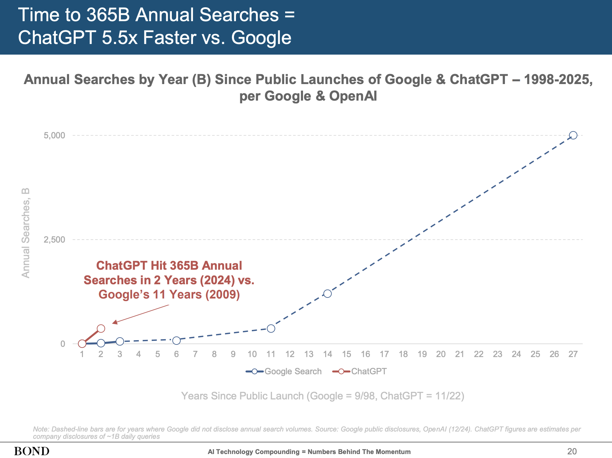
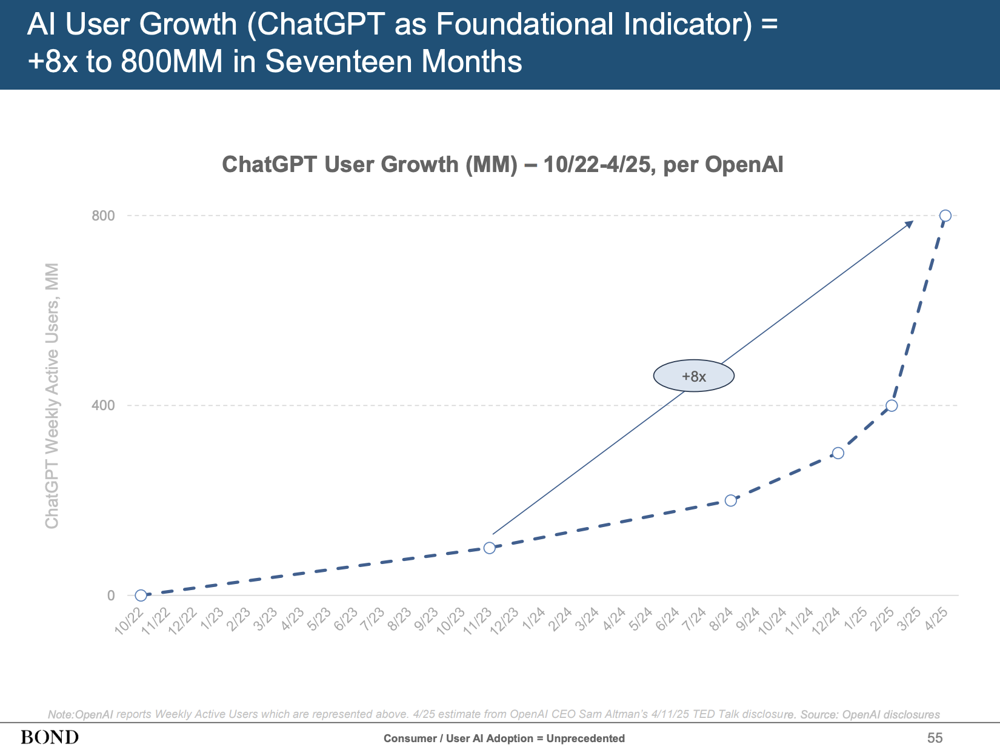
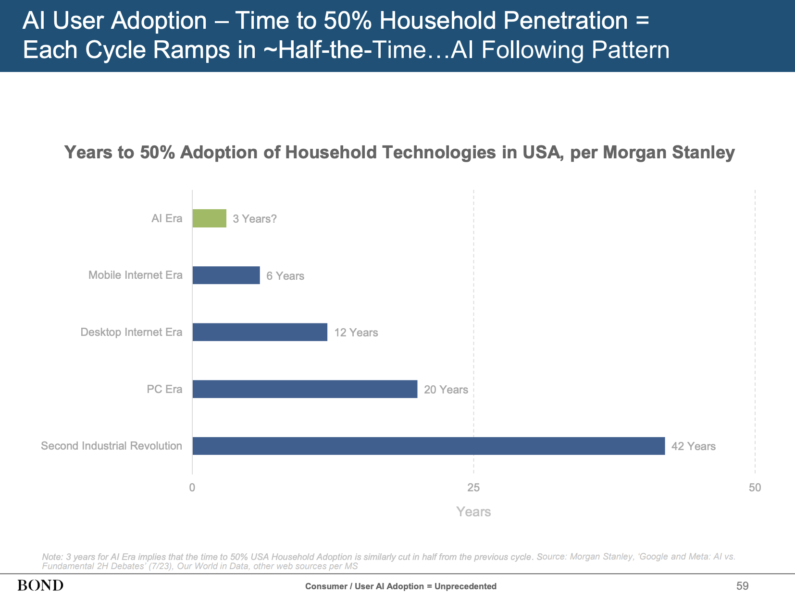
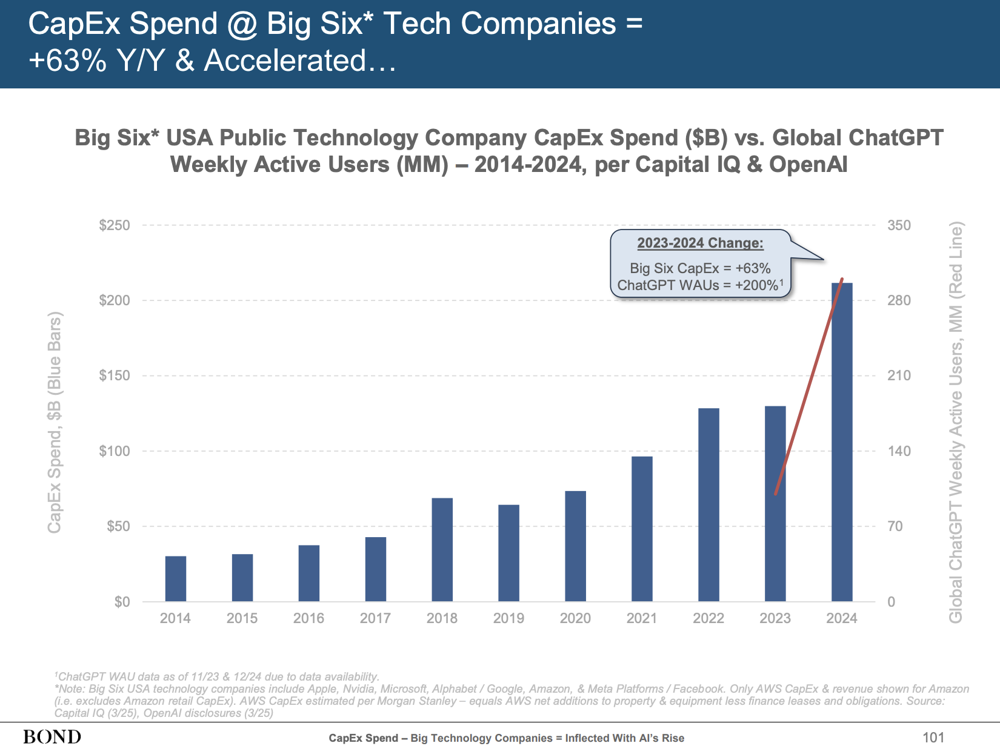
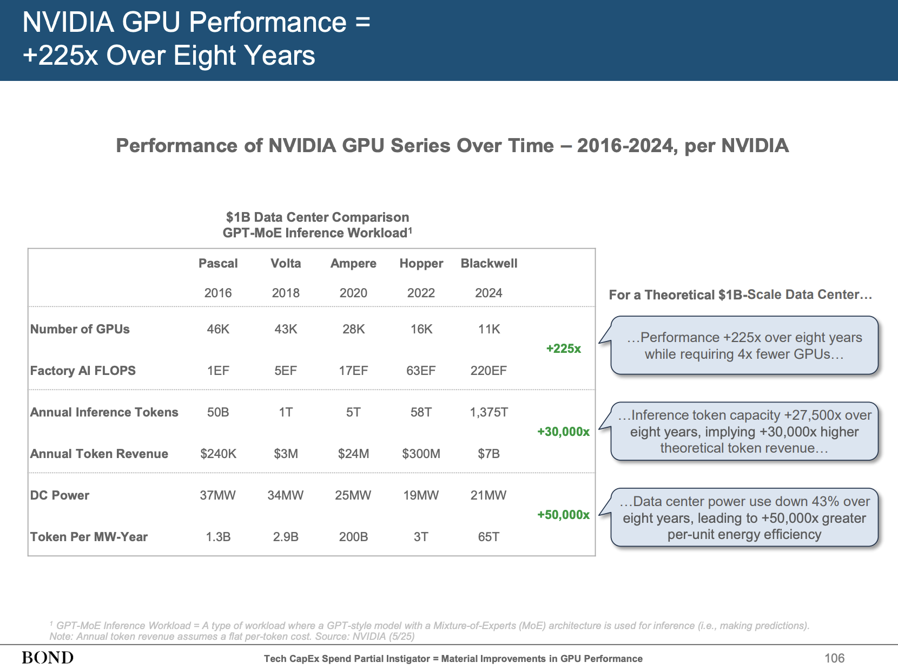
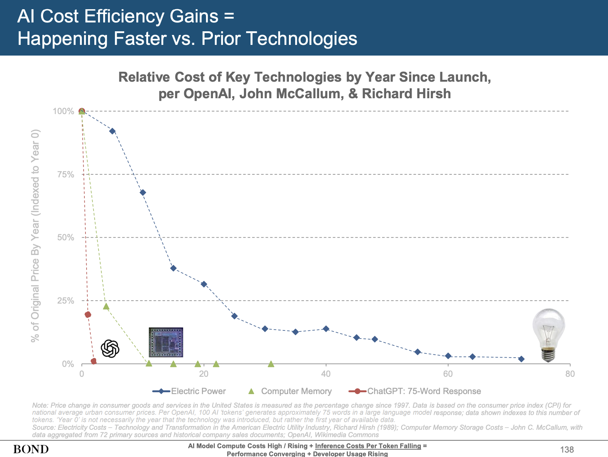
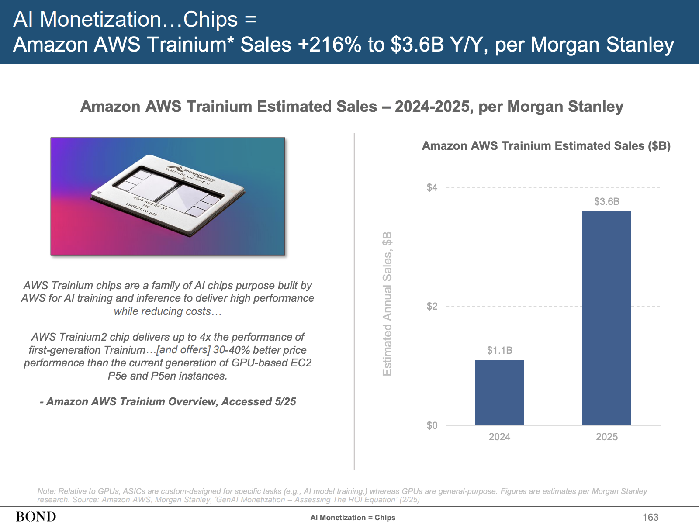
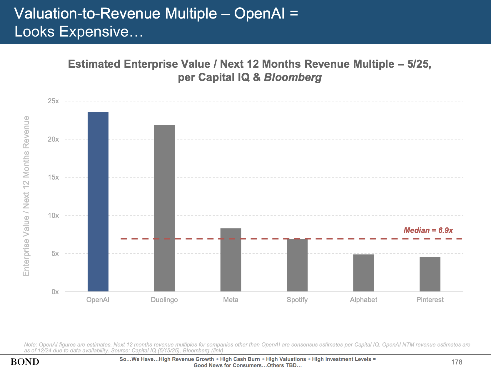
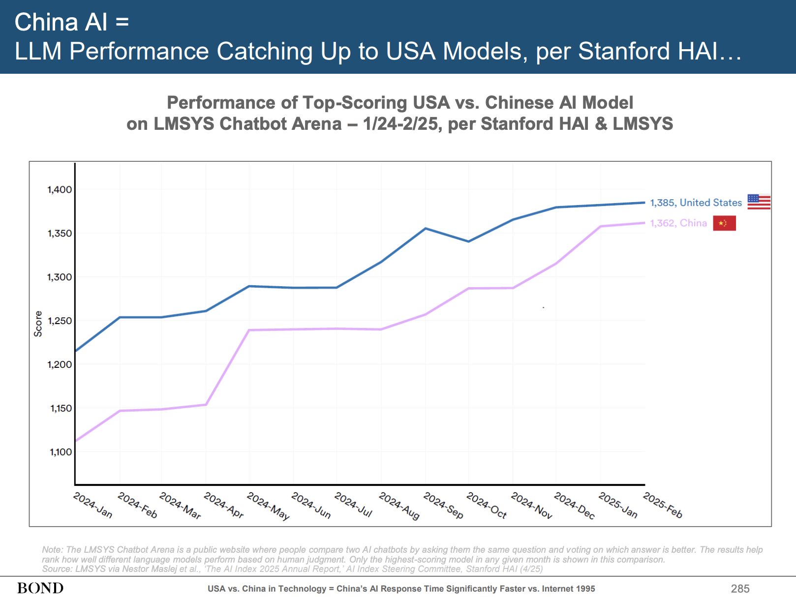
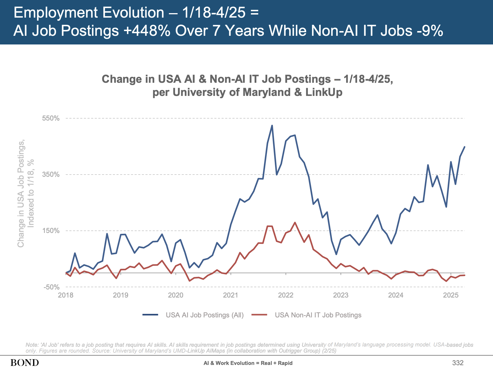

「インターネットの女王」ことMary Meeker氏が、我々の度肝を抜くレポートを引っ提げて帰ってきた。Bond Capitalから2025年5月30日付で公開された「Trends – Artificial Intelligence」レポートは、全340スライドという圧巻のボリュームで、現在のAIの状況をこれでもかと描き出している。本稿では、高い情報密度と鋭い洞察に満ちたこのレポートを読み解いていきたい。
1999年、インターネットの黎明期にVint Cerfが「インターネット業界の1年はドッグイヤー（7年分）に相当する」と語ったが、Meeker氏によれば、AIの進化はそれをも凌駕するスピードだという。ユーザー数や利用状況の伸び、そしてそれを支える設備投資の急増ぶりは、まさに「前例がない（unprecedented）」の一言。ChatGPTが一般公開されてから、世界が一変したと言っても過言ではないだろう。
今回のレポート、まさにデータとグラフの洪水となっているが、特に著者の目を引いたポイントをいくつかピックアップしてみた。2000年代のITバブルと今のAIブームはどう違うのか？ChatGPTの急成長は、かつてのGoogleと比べてどうなのか？そして、AWSのTrainiumチップはGoogle TPUの牙城を崩せるのか？AI関連企業の評価額は、一体どこまで行くのか？そんな疑問に、Meeker氏らのデータが鋭く切り込んでいく。
AIはインターネットより速い？驚異の成長スピード
まず度肝を抜かれるのが、AIの普及スピードだ。スライド20を見てほしい。「年間3650億検索への到達期間」を比較すると、ChatGPTがわずか2年で達成したのに対し、Googleは11年もかかっている。実に5.5倍の速さだ。まさに爆速。

ユーザー数の伸びも凄まじい。スライド55によれば、ChatGPTの週間アクティブユーザー数（WAU）は、2022年10月のサービス開始からわずか17ヶ月で8倍の8億人に達している。Meeker氏も「こんな世界的な広がりは見たことがない（Have Not Seen Likes of This Around-the-World Spread Before）」と驚きを隠さない。インターネットが北米から徐々に世界へ広がっていったのとは対照的に、ChatGPTは最初からグローバルに同時多発的に普及したというわけだ。

1億ユーザー獲得までの期間を他のサービスと比較したスライド57も興味深い。Netflixが10.3年、Instagramが2年強（スライドでは具体的な数字は2.0より少し上程度）かかったのに対し、ChatGPTはわずか0.2年（約2ヶ月半）で達成している。もはや比較にならないレベルだ。家庭への普及率50%達成期間も、PC時代が20年、デスクトップインターネット時代が12年、モバイルインターネット時代が6年だったのに対し、AI時代はわずか3年と予測されている（スライド59）。まさに隔世の感がある。

AI開発とインフラ投資：青天井のマネーゲーム
このAIの急成長を支えているのが、莫大な設備投資（CapEx）だ。スライド97によれば、米国テクノロジー大手6社（Apple, NVIDIA, Microsoft, Alphabet, Amazon (AWSのみ), Meta）の設備投資額は、2014年から2024年の10年間で年平均21%増と右肩上がりだったが、直近の2024年には前年比63%増の2120億ドルに達している。特にAIの本格的な勃興と軌を一にしているのが見て取れる（スライド101）。

この投資の多くは、AIモデルの訓練と推論に使われるコンピューティングリソース、特にGPUやTPUといった専用チップに向けられている。NVIDIAのGPU性能はここ8年で225倍向上し（スライド106）、AIモデルの訓練に必要な計算量も過去15年間で年平均360%という驚異的なペースで増加している（スライド15）。

一方で、AIモデルの推論コスト（実際にAIを使う際のコスト）は劇的に低下している。スライド137によれば、AIの推論コストは過去2年間で99.7%も低下。これは、電気料金やコンピュータメモリのコスト低下ペースを遥かに上回る（スライド138）。「安くなったからもっと使う、もっと使うからもっと賢くなる」という好循環（あるいは過当競争？）が生まれているわけだ。

チップ戦争：AWS Trainium vs Google TPU
チップの話も面白い。AIの心臓部とも言える半導体チップの覇権争いは熾烈だ。NVIDIAが先行しているのは周知の事実だが、クラウド大手のGoogleやAmazonも自社開発チップで猛追している。
スライド162によると、GoogleのTPU（Tensor Processing Unit）の2024年売上は推定89億ドル（前年比+116%）。一方、スライド163では、Amazon AWSのTrainiumチップの2024年売上は推定11億ドル、そして2025年には36億ドルに達する（2024年比+216%）と予測されている。

2024年時点ではTrainiumはTPUの約12%（11億ドル vs 89億ドル）だが、2025年のTrainium予測値36億ドルと、Google TPUの2024年の実績89億ドルを比較すると、Trainiumは約40%の規模にまで成長することになる。成長率ではTrainiumがTPUを上回っており、まさに猛追している状況と言えるだろう。TPUの半分にはまだ届かないが、その差は急速に縮まっている。このチップ開発競争が、AI全体のコスト構造や性能向上に大きな影響を与えるのは間違いない。
AI企業の評価額：期待先行か、実態か？
AI関連企業の評価額も、まさにバブルの様相を呈している。スライド176-179あたりが詳しいが、未上場のAIモデル開発企業を見てみよう。
- OpenAI: 年間収益（推定）92億ドルに対し、調達額639億ドル以上、評価額3000億ドル（Revenue Multiple33x）
- Anthropic: 年間収益（推定）20億ドルに対し、調達額180億ドル、評価額615億ドル（Revenue Multiple31x）
- xAI: 年間収益（推定）1億ドル超に対し、調達額121億ドル、評価額800億ドル
- Perplexity: 年間収益（推定）1.2億ドルに対し、調達額14億ドル、評価額90億ドル（Revenue Multiple75x）
（※収益、調達額、評価額は2025年5月時点のMeeker氏レポートの推定値に基づく）
これらの数字を見ると、まさに期待感が先行している状況だ。スライド178では、OpenAIの今後12ヶ月の売上に対する企業価値の倍率（Enterprise Value / Next 12 Months Revenue）は、他の上場テック企業（Meta、Spotify、Alphabetなどの中央値6.9倍）と比較しても突出して高いことが示されている。

一方で、Meeker氏は過去のテック企業の事例も引き合いに出し、必ずしも悲観的な見方をしているわけではない（スライド180-181）。AppleやAmazonも創業初期には巨額の赤字を出しながら成長し、現在の巨大企業へと飛躍した。重要なのは、「その事業の評価額が、将来生み出すフリーキャッシュフローの現在価値に見合うかどうか」であり、現在のAI企業がそのハードルを越えられるのか、まさに真価が問われている。
中国の猛追とオープンソースの逆襲
AI開発競争は、もはや米国だけの独壇場ではない。スライド281によれば、大規模AIシステムの開発数では、米国が依然としてリードしているものの、中国が急速に追い上げている。特に2024年以降、中国発のモデルリリースが目立つ。DeepSeek、AlibabaのQwen、BaiduのErnieといったモデルは、性能面でも米国勢に肉薄しつつあり（スライド285）、しかも低コストで開発されているケースも見られる（スライド286）。

さらに興味深いのは、オープンソースモデルの勢いだ。スライド262によれば、消費者向けでは依然としてクローズドモデル（OpenAIのChatGPTやGoogleのGeminiなど）が圧倒的なシェアを誇るものの、開発者の間ではMetaのLlamaのようなオープンソースモデルの利用が急増している（スライド268）。スライド261でMeeker氏も指摘するように、AI開発はアカデミア主導のオープンソースから始まり、その後、競争優位や安全性の観点からクローズドモデルが主流となったが、ここに来て再びオープンソースが勢いを増している。これは、コストの低さ、カスタマイズの自由度、そして何よりも性能の向上が背景にある。
中国は、このオープンソースの潮流をうまく捉え、国家戦略としてAI開発を推進している。産業用ロボットの導入数でも、中国は世界の他地域を圧倒しており（スライド288-289）、物理世界におけるAI活用でも大きな存在感を示し始めている。
物理世界への浸透と仕事の未来
AIは、もはやチャットボットや画像生成だけの技術ではない。自動運転（スライド301-303）、防衛（スライド304）、鉱業（スライド305）、農業（スライド306）、さらには家畜管理（スライド307）といった物理的な世界でも、AIは急速にその応用範囲を広げている。テスラの完全自動運転（FSD）の走行距離は過去33ヶ月で約100倍に増加し、Waymoはサンフランシスコのライドシェア市場で20ヶ月で0%から27%のシェアを獲得したというデータは衝撃的だ。
そして、我々の働き方もAIによって根本から変わろうとしている。スライド332では、米国のAI関連求人は過去7年間で448%増加したのに対し、非AIのIT求人は9%減少したと報告されている。NVIDIAのジェンスン・フアンCEOは「AIに仕事を奪われるのではない。AIを使う人に仕事を奪われるのだ」と語っているが（スライド336）、これはまさに的を射た指摘だろう。ShopifyやDuolingoといった企業が「AIファースト」を宣言し、全社的にAI活用を推進している事例も紹介されている（スライド326-327）。

まとめ：加速する変化の渦中で
Mary Meeker氏のレポートが示すのは、AIがもたらす変化のスピードと規模が、我々の想像を遥かに超えているという厳然たる事実だ。インターネットが世界を変えたように、あるいはそれ以上の速さで、AIは社会のあらゆる側面に浸透しつつある。巨額の資金が流れ込み、熾烈な開発競争が繰り広げられる中で、どの企業が勝ち残り、どのようなビジネスモデルが確立されるのか、現時点ではまだ見通せない部分も多い。しかし、この変化の波に乗るか否かが、今後の企業や個人の競争力を大きく左右することは間違いないだろう。